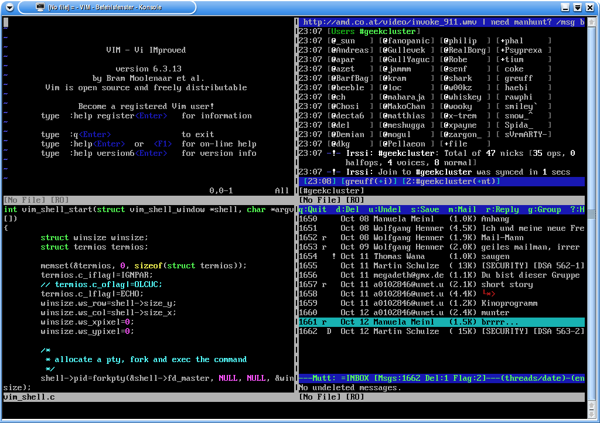

2.37. Vim¶
Vim ist ein hervorragender Editor mit Syntaxhervorhebung und
Vergleichsfunktionen, mehreren Darstellungsfenstern und vielen anderen
nützlichen Funktionen. Leider ist der Einstieg damit nicht immer ganz
leicht, da vim eine Weiterentwicklung des Editors vi ist, den es bereits
in den 80er Jahren gab, wo Benutzerfreundlichkeit noch eine andere
Bedeutung hatte als heute. Weiterhin erscheint vim im unkonfigurierten
Zustand zunächst erstmal sehr langweilig und es ist mühselig eine
passende Konfiguration zu erstellen. Darum möchte ich hiermit einen sehr
kleinen Einstieg in die Welt von vim geben.
2.37.1. Erste Schritte¶
Es gibt mehrere Möglichkeiten eine Datei zu laden. Entweder gibt man den Dateinamen beim Start des Editors als Parameter mit an
vim meintext.c
oder man startet zunächst den Editor und lädt dann anschließend die Datei
vim
:edit meintext.c
Man kann auch die grafische Version durch Verwendung des Befehls
gvim benutzen. Ob dabei GTK+ 1 oder 2 verwendet wird, muss zum
Zeitpunkt des Kompilierens festgelegt werden.
Wenn die Datei meintext.c noch nicht existieren sollte, dann ist das
kein Problem, denn man bekommt einen leeren Puffer angezeigt und beim
Speichern wird sie dann unter dem angegebenen Namen gesichert. Wir
verwendet die Endung .c damit vim automatisch erkennt, dass es sich um
ein kleines C-Programm handelt und es entsprechend einfärben wird.
Nun befinden wir uns zunächst im Befehlsmodus, wo die Tasten der Tastatur mit bestimmten Kommandos und Aktionen belegt sind und keine Texteingabe möglich ist. Man wechselt in den Einfügemodus durch Betätigen der Taste „i“. Daraufhin erscheint der Text „– INSERT –“ in der Statuszeile, der uns anzeigt, dass wir nun mit dem Schreiben loslegen können.
Wir tippen mal folgendes C-Programm, um einen Eindruck von der Syntaxhervorhebung zu bekommen:
#include <stdio.h>
int main (int argc, char* argv[]) {
char blub[10];
for (i = 0; i < 10; i++)
printf ("%d\n", i);
int i;
return 0;
}
Nun haben wir die Variable blub unnötigerweise deklariert, und die
Deklaration von i an die falsche Stelle gesetzt. Um diese Fehler zu
beseitigen beenden wir nun den Einfügemodus mit Escape und bewegen die
Schreibmarke zur Zeile mit dem Blub. Dann drückt man zwei Mal „d“ um die
Zeile zu löschen. Man kann einen Befehl auch mehrfach oder auf mehrere
Zeilen anweden indem man erst die Anzahl und dann den Befehl
hintereinander weg eingibt, also z.B. „8dd“ löscht 8 Zeilen.
Ein bereits zum Teil eingegebener Befehl kann immer mit Escape
abgebrochen werden.
Nun korrigieren wir den int i-Fehler. Dazu bewegen wir wieder erst
die Schreibmarke zur Zeile int i; und drücken dann erneut zwei Mal
„d“ um die Zeile zu löschen. Die Zeile wurde aber nicht wirklich
gelöscht, sondern in einen Zeilenpuffer temporär abgelegt. Bewegen wir
uns nun zur for-Zeile und drücken einfach „P“ (Achtung, großes P)
und schon wird die zuvor gelöschte Zeile an der richtigen Stelle wieder
eingefügt.
Zeilen kann man mit „Y“ (yank) in den Zeilenpuffer kopieren ohne sie löschen zu müssen. „7Y“ kopiert sieben Zeilen.
Durch Eingabe von „:w“ (write) wird die Datei nun unter dem zuvor angegebenen Dateinamen abgespeichert und der Editor lässt sich durch „:q“ (quit) beenden. Mit : eingeleitete Befehle werden immer mit einem Druck auf die Enter-Taste beendet oder bestätigt. Man kann diese Befehle auch zum Beispiel zu „:wq“ kombinieren, aber zum Speichern und Beenden gibt es auch einen eigenen Befehl „:x“. Eine Befehlsausführung lässt sich versuchen zu erzwingen indem man noch ein Ausrufezeichen hinten dran stellt, was ganz nützlich ist, wenn man zwar Besitzer einer Datei ist, aber kein Schreibrecht darauf hat.
2.37.2. Weitere Funktionen¶
Wir wollen noch ein paar weitere Funktionen kennenlernen und öffnen dazu unsere Datei wieder.
Als erstes sollen die for-Zeile und die darauf folgende zusammen gelegt
werden. Man bewegt die Schreibmarke in die printf-Zeile und drückt „J“
(join) (Achtung, wieder Großbuchstabe) und … huch! Das ging daneben.
Jetzt haben wir die Zeile printf („%dn“, i); return 0; und drücken
schnell das „u“ (undo) um die Aktion rückgängig zu machen. Das
Gegenstück dazu ist Strg+“r“ (redo) um eine fälschlich rückgängig
gemachte Aktion wiederherzustellen. Das „J“ muss in der for-Zeile
gedrückt werden damit die printf-Zeile um eins hoch wandert. Es gilt
auch wieder, dass beispielsweise „5J“ fünf Zeilen zusammenfügt.
2.37.2.1. Suchfunktion¶
Wir geben einfach mal folgendes ein:
/int
Während des Tippens sucht vim schon das erste Auftreten ab der
Schreibmarke. Sobald man den Befehl mit Enter abschließt, werden
alle vorkommen von int hervorgehoben. Mit „n“ (next) kann man mit
der Schreibmarke von int zu int springen. Die Suchfunktion
verwendet reguläre Ausdrücke, auf die ich aber hier nicht näher eingehen
möchte, aber dennoch ein paar Beispiele zeigen möchte.
/^int
Das ^ steht für einen Zeilenanfang und findet dementsprechend nur ein
int in unserem Beispiel.
/int<nowiki>[[:space:]]</nowiki>
<nowiki>[[:space:]]</nowiki> bezeichnet die Zeichenklasse der
Freizeichen und enthält Leerzeichen sowie auch Tabulatorzeichen. So wird
beispielsweise das int in printf nicht gefunden. In unserem
Beispiel hätten wir <nowiki>[[:space:]]</nowiki> nicht verwenden
müssen; ein einfaches Leerzeichen zu tippen hätte ausgereicht.
/<nowiki>[[:digit:]]</nowiki>
Diese Zeichenklasse enthält die Zeichen 0 bis 9. Demnach werden alle Ziffern im Quelltext hervorgehoben. Man kann hier auch „[0-9]“ verwenden.
/(.*)
Dieser Ausdruck findet alles, was zwischen zwei runden Klammern steht.
2.37.2.2. Fensteraufteilung¶
Jetzt speichern wir den Text unter einem anderen Dateinamen ab
:write meintext2.c
und würden uns gern die erste Version nochmals gleichzeitig dazu anschauen. Der Befehl
:split meintext.c
spaltet den Bildschirm horizontal und zeigt oben meintext.c und
unten unsere bereits geöffnete meintext2.c an. Zwischen den beiden
Fensterhälften kann man mit Strg+“ww“ (zwei w) wechseln. Wir
wechseln nun in die untere Hälfte und öffnen erneut meintext.c, aber
diesmal mit einer vertikalen Trennung
:vsplit meintext.c
Nun werden es langsam zuviele Teilfenster. Wir gehen in das obere und schließen es:
:close
Wenn man nur die Datei im aktuellen Fenster haben möchte und alle anderen geschlossen, dann verwendet man
:only
in dem gewünschten Teilfenster. Das tun wir jetzt, so dass wir
schließlich nur noch meintext2.c offen haben.
'Syntaxhervorhebung. Geteiltes Fenster. So kann es aussehen.‘
{kind=link}
2.37.2.3. Visueller Modus¶
Im visuellen Modus kann man mit vim Text markieren. Hierbei gibt es drei verschiedene Möglichkeiten:
vmarkiert zeichenweiseVmarkiert zeilenweiseStrg+vmarkiert spaltenweise
Hat man erst einmal Text markiert, kann man darauf die bekanten
Kommandos anwenden, x löscht den Text, ~ kehrt die gROSS- und
kLEINschreibung um, etc.
Besonders mächtig ist die spaltenweise Markierung. Hiermit kann man z.B.
komfortabel und schnell Text in mehreren aufeinanderfolgenden Zeilen
einfügen. Dazu drückt man Strg+v, markiert mit den Pfeiltasten oder
h,j,k,l den gewünschten Bereich, wechselt mit einem großen I in
den Einfügemodus und fügt Text hinzu. Abschließend noch ein Druck auf
die ‚Esc‘-Taste und der Text erscheint auf allen markierten Zeilen.
2.37.2.4. Ausführen von Programmen¶
Nun möchten wir auch gerne unseren Quelltext kompiliert und ausgeführt haben. Dazu muss der Editor aber nicht verlassen werden. Mit dem Befehl „:!“ können externe Programme aufgerufen werden:
:!cc meintext2.c -o meintext
Hit ENTER or type command to continue
:!./meintext
0
1
2
3
4
5
6
7
8
9
Hit ENTER or type command to continue
Mit dem Ausführungsbefehl „:!“ kann man also jedes beliebige Programm
aus vim heraus starten; auch ein eine Shell wie bash beispielsweise.
Hat man im aktuellen Verzeichnis ein Makefile, so kann man mit der Eingabe von :make den Makeprozess starten. Wird dann beim Kompilieren ein Fehler gefunden, zeigt VIM diesen in einem Fenster an und setzt den Cursor auf die entsprechende Codezeile.
2.37.2.5. VIM Remote¶
VIM kann auch als Server eingesetzt werden. Hierzu startet man eine neue gvim Instanz und kann dann von einer beliebigen Console aus mit
gvim --remote <file(s)>
Dateien an die laufende gvim Instanz schicken. Um das ganze zu vereinfachen, legt man sich am besten ein Alias in der Shell an, z.B. (tcsh):
alias gvr 'gvim --remote'
Dann kann man mit gvr <file(s)> die Dateien editieren.
Ab VIM Version 7 gibt es auch auch den Startparameter –remote-tab, die neue Dateien in einem eigenen Registerreiter in gvim öffnet.
Das war’s. Nun kann man schon wirklich anfangen mit vim produktiv zu
arbeiten. Viel Spaß dabei.
2.37.3. Addons¶
2.37.3.1. Vim Shell¶
Die Vim shell ist ein nettes Addon von: http://www.wana.at/vimshell.
Mit ihr kann man zum Beispiel in einem ‚split screen‘ im oberen Teil coden und im unteren mit Mutt seine Mails lesen:
'Die Installation funktioniert folgendermaßen‘
% cd /usr/ports/distfiles fetch 'http://www.wana.at/vimshell/vimshell_1.0_vim6.4.patch.bz2 '
% cd /usr/ports/editors/vim-lite
% make extract
% cd work/vim64
% bzcat /usr/ports/distfiles/vimshell/vimshell_1.0_vim6.4.patch.bz2 \| patch -p0
% cd ../..
% make install
 k33n at kewler dot de Nun kann man mit ‚:vimshell csh‘ ein shell in vim starten. In einem ‚split screen‘ sieht das ganze dann so aus:
{kind=link}
<br style="clear:both;">
2.37.4. Kurzreferenz¶
Jetzt gibt’s nochmal eine Kurzreferenz der verwendeten Befehle zum schnellen Nachschlagen.
Stellt man dem Befehl eine Zahl n voran, so bedeutet das, dass der
Befehl n-mal ausgeführt wird oder sich auf n Zeilen bezieht.
i Startet den Einfügemodus, der sich durch ''Escape'' wieder beenden lässt.
dd Löscht eine Zeile.
P Fügt den Inhalt aus dem Zeilenpuffer ab der aktuellen Zeile ein.
Y Kopiert eine Zeile in den Zeilenpuffer.
u Macht die letzte Änderung rückgängig. Man kann diesen Befehl mehrfach hintereinander verwenden.
Strg+r Stellt die letzte rückgängig gemachte Änderung wieder her.
J Fügt die aktuelle Zeile mit der darauffolgenden zusammen.
/<suchmuster> Sucht das angegebene Muster im Text und markiert alle vorkommen.
n Springt mit der Schreibmarke zum nächsten Treffer der Suche.
:edit [<datei>] Öffnet eine Datei zum Bearbeiten im aktuellen Editorfenster. Kurzform ":e"
:write [<datei>] Speichert die Datei, die sich im aktuellen Editorfenster befindet. Kurzform ":w"
:split [<datei>] Teilt das Fenster horizontal auf. Es kann optional eine Datei in das neue Teilfenster geladen werden.
:vsplit [<datei>] Teilt das Fenster vertikal auf.
:close Schließt das aktuelle Teilfenster.
:only Schließt alle bis auf das aktuelle Teilfenster.
:quit Beendet den Texteditor. Kurzform ":q"
:!<Befehlszeile> Führt den Befehl mit den angegebenen Parametern aus.
Auch praktisch ist diese vim-Kurzreferenz von strcat.
2.37.5. Beispielkonfiguration¶
Hier ist schließlich noch die versprochene Konfiguration, die für die kleine Schritt-für-Schritt-Anleitung sehr zu empfehlen ist. Die mit Anführungszeichen beginnenden Zeilen sind Kommentare. Alle genannten Optionen kann man auch zur Editorlaufzeit festlegen indem man ihnen ein „:“ voranstellt, z.B.
:colors koehler
um eine andere Farbgebung temporär zu setzen. So muss man nicht jedes mal .vimrc anpassen und den Editor neustarten, wenn man etwas ausprobieren möchte.
Eine komplette Dokumentation findet man entweder lokal unter
/usr/local/share/vim/vim63 oder im Internet in HTML-Form unter
vimdoc.sourceforge.net.
Zum ausprobieren kannst du die
Beispielkonfiguration
auch herunterladen und unter ~/.vimrc speichern damit sie wirksam
wird.
Spezielle Einstellungen für die grafische Komponente gvim werden in .gvimrc gespeichert.
"" Syntaxhervorhebung
syntax on
"" Farbschema
"" weitere Schemata sind im Verzeichnis /usr/local/share/vim/vim63/colors/ aufgelistet
colorscheme evening
"" Optimiert die Syntaxvorhebung, je nachdem, ob man einen dunklen
"" oder hellen Hintergrund hat
set background=dark " dark/light
set encoding=iso-8859-15
"" weite Möglichkeiten zur Einstellung des Zeichensatzes
" set termencoding=iso-8859-15
" set fileencodings=ucs-bom,utf-8,latin1
"" immer die Statuszeile mit dem Dateinamen anzeigen
set ls=2
"" automatischer Zeilenumbruch, wenn die Zeile zu lang ist
set wrap
" set nowrap
"" Kompatibilitätsmodus zu vi abschalten
set nocompatible
"" Wieviele Leerzeichen lang ist ein Tabulator?
set tabstop=4
"" Ersetze Tabulatoren durch Leerzeichen
set expandtab
"" Einrückungstiefe
set shiftwidth=4
"" Einrückungen im C-Stil
set cindent
"" alternative Einrückungsstile
" set autoindent
" set smartindent
"" Suchfunktion ignoriert Groß- und Kleinschreibung
set ignorecase
"" zeigt unten links diverse Positionsinformationen der Schreibmarke
set ruler
"" die Shell, die beim Starten von Programmen aus dem Editor heraus verwendet werden soll
set shell=/bin/tcsh
"" zeigt beim Schließen von Klammern kurz an, wo sie geöffnet wurde
set showmatch
"" zeigt in der Statuszeile an, ob man sich im Einfügemodus (INSERT) oder im Ersetzungsmodus (REPLACE) befindet
set showmode
"" Zeilennummern anzeigen
set number
"" Verhalten der Rückschritttaste
set backspace=indent,eol,start
"" einige Tastenbelegungen
" Einfg
map ^[[2~ i
" Entf
map ^? x
" Pos1
map ^[[1~ ^
" Ende
map ^[[4~ $
" Bild auf
map ^[[5~ <C-B>
" Bild ab
map ^[[6~ <C-F>
" Rückschritt
map ^H X
" Pfeiltasten
map ^[[B j
map ^[[D h
map ^[[C l
map ^[[A k
"" Beispiel einer F-Tastenbelegung
" F11 = zweimaliges Drücken von d
" aktuelle Zeile löschen und im Puffer speichern
map <F11> dd
" F12 = betätigen von P (Achtung, ein kleines P hat eine leicht andere Bedeutung)
" im Puffer gespeicherte Zeile(n) an aktueller Position einfügen
map <F12> P
"" F9 schaltet Syntaxhervorhebung ein und aus
map <F9> :if has("syntax_items")<CR>syntax off<CR>else<CR>syntax on<CR>endif<CR><CR>
"" F10 schaltet den Pastemodus ein und aus (einschalten, wenn die Formatierung bei
"" eingefügtem Text verloren geht)
set pastetoggle=<F10>
"" nicht an den Zeilenanfang bei Benutzung von Bild auf und Bild ab gehen
set nostartofline
"" Suchergebnisse hervorheben und schon beim Suchen anzeigen
set hlsearch
set incsearch
"" Wer die Maus für übliches Copy&Paste verwenden will, der sollte diese Zeile hinzufügen:
" set mouse=
"" Kommandoalias der :Wq erlaubt
command! Wq wq
"" Textersetzung
iab LOL I will not use LOL in my text
"" Codefaltungsfunktion für pl, pm, c, h, cpp und java Files
au BufNewFile,BufRead * syn sync fromstart
au BufNewFile,BufRead * set foldmethod=manual
au BufNewFile,BufRead *.c,*.h,*.cpp,*.cc,*.java set foldmethod=syntax
au BufNewFile,BufRead *.pl,*.pm set foldmethod=indent
au BufNewFile,BufRead *.c,*.h,*.cpp,*.cc,*.pl,*.pm,*.java syn region myFold start="{" end="}" transparent fold
au BufNewFile,BufRead * set foldlevel=99
au BufNewFile,BufRead *.html,*.htm set sw=1
au BufNewFile,BufRead *.po set tw=80
au BufNewFile,BufRead *.hg set ft=cpp
au BufNewFile,BufRead *.ccg set ft=cpp
fun! ToggleFold()
if foldlevel('.') == 0
normal! l
else
if foldclosed('.') < 0
. foldclose
else
. foldopen
endif
endif
" Clear status line
echo
endfun
"" <Space> Klappt den Codebereich ein oder aus
noremap <space> :call ToggleFold()<CR>1
2.37.6. Links¶
Beispielkonfiguration aus diesem Artikel
Björn König 05:58, 26. Jan 2005 (CET)
Zuletzt geändert: 2021-05-24